{kind=link}
01 · Blue stone highlight
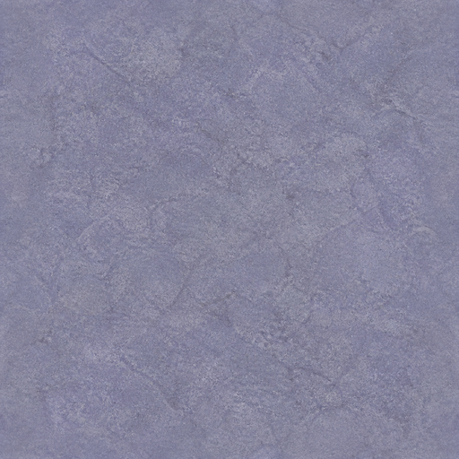
Approve if: clearly the brightest blue-stone state; quiet fine mineral texture; no focal mark, bevel, grid, vignette, or directional light; repetition feels continuous.
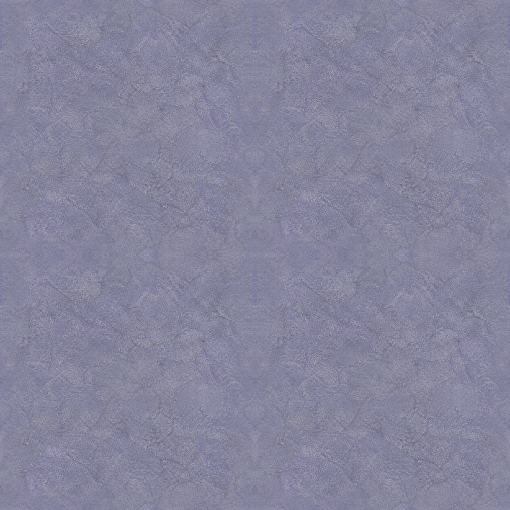
The 11 deterministic candidates below were approved by human review on 2026-08-13. Compare identity, composition, palette, readability, and lighting against the locked Classic reference. UI materials also include 2×2 repetition and half-roll evidence.
REVIEW COPY — 0 APPROVALS RECORDED
Approve if: clearly the brightest blue-stone state; quiet fine mineral texture; no focal mark, bevel, grid, vignette, or directional light; repetition feels continuous.

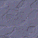
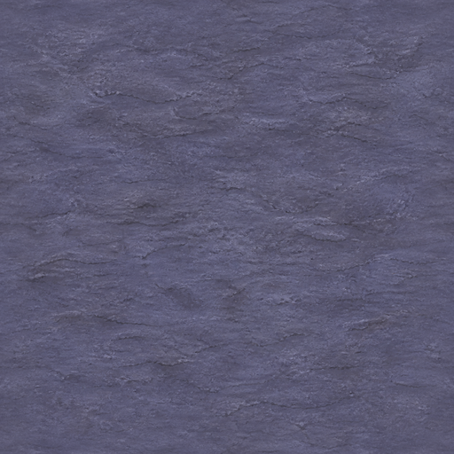
Approve if: mid-value slate-blue between states 01 and 03; organic low-contrast grain; no checkerboard, masonry, cracks, focal motif, or baked light; repetition feels continuous.
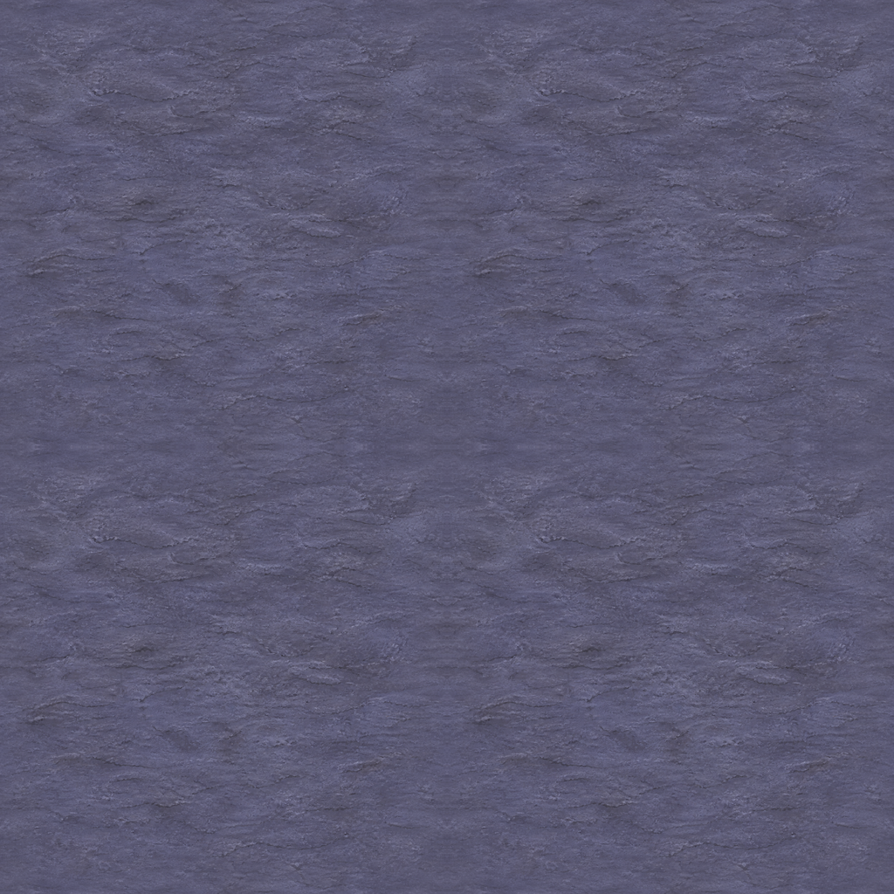
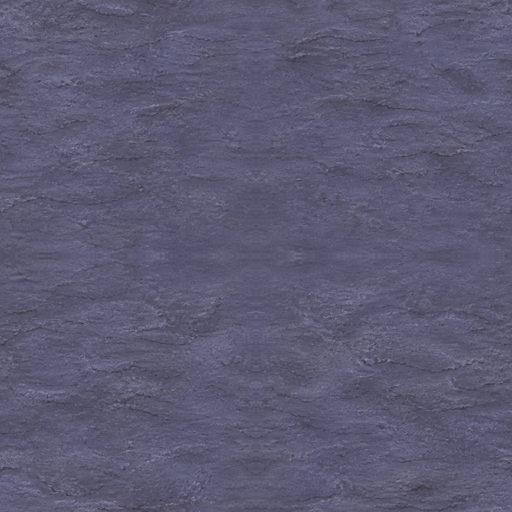
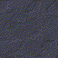
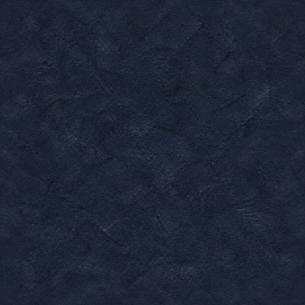
Approve if: unmistakably the darkest blue state while detail remains readable; continuous navy stone with no black void, slab network, cracks, focal mark, or directional light.
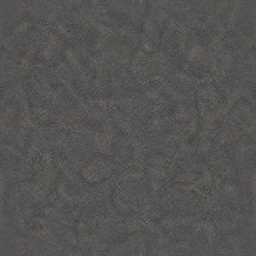
Approve if: neutral cool gray rather than blue; evenly distributed fine mineral grain; no arcs, grooves, landmark, border, gradient, or repeated cadence.
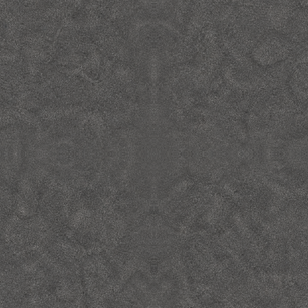
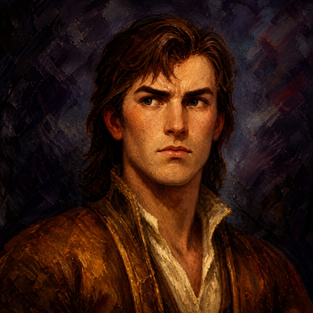
Approve if: same young human identity, narrow face, serious side-gaze, dark auburn hair, cream collar, rust clothing, and cool dark backdrop; no glamour, elf traits, props, text, or modern studio lighting.
Also judge facial expression and eye direction at the final 44×44 logical display size.
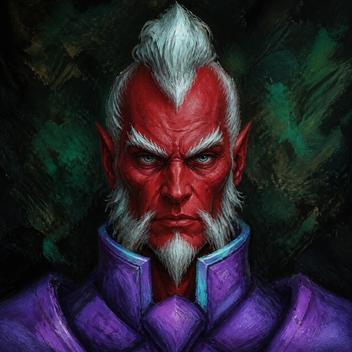
Approve if: intrinsic red skin, high white/cyan hair, stern frontal identity, source-supported ears/facial hair, violet/cyan shoulders, and green-black field remain coherent; no invented horns, sigils, props, text, or glossy armor.
At 44×44, confirm the ears still read as ears—not horns—and the face remains legible.
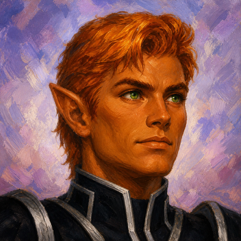
Approve if: copper/tan young elf, short golden-auburn hair, visible pointed ear, green eyes, calm gaze, black/silver collar, and lavender field preserve the identity; no generic human, stereotype, anime gloss, props, or text.
Identity/gender fidelity is the primary judgment call for this candidate.
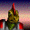
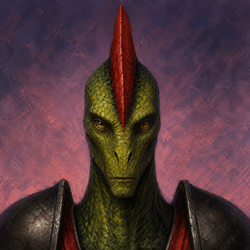
Approve if: narrow elongated green-scaled face, one tall red crest, closed mouth, stern frontal gaze, dark shoulders/red insets, and abstract pink-violet field remain faithful; no broad dragonborn skull, extra spikes, scenery, or text.
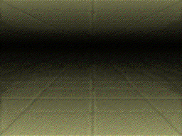
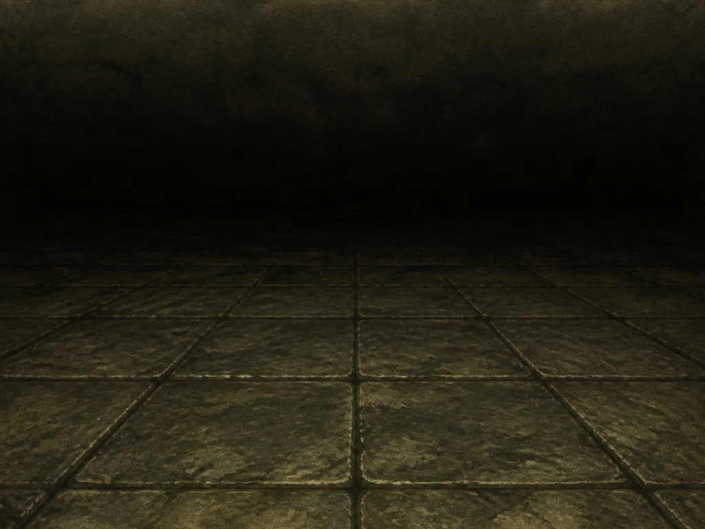
Approve if: 4:3 camera and converging floor seams, pale near floor, central dark recess, and dim upper depth preserve first-person readability; no props, walls, doors, figures, FOV change, vignette, or baked torchlight.
Approve if: the whole square remains water; bright foam enters left and dominates bottom while deep flow enters top/right; no cliff, rocks, bank, horizon, scenery, warm light, text, frame, or transparency.
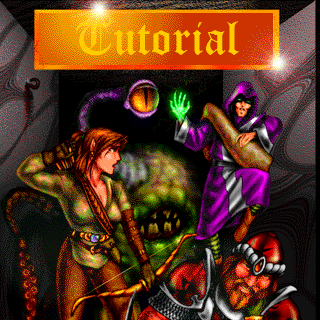
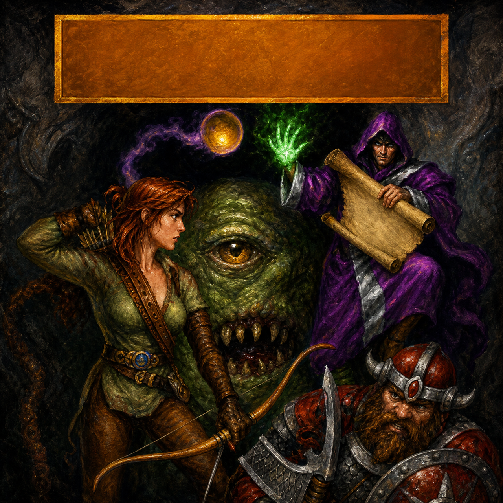
Approve if: blank orange-gold plaque; one archer, one clearly one-eyed ogre, one purple spellcaster with blank parchment, one smaller horned dwarf with axe/shield, and one non-creature orb; no pseudo-text, extra eyes, figures, limbs, or weapons.